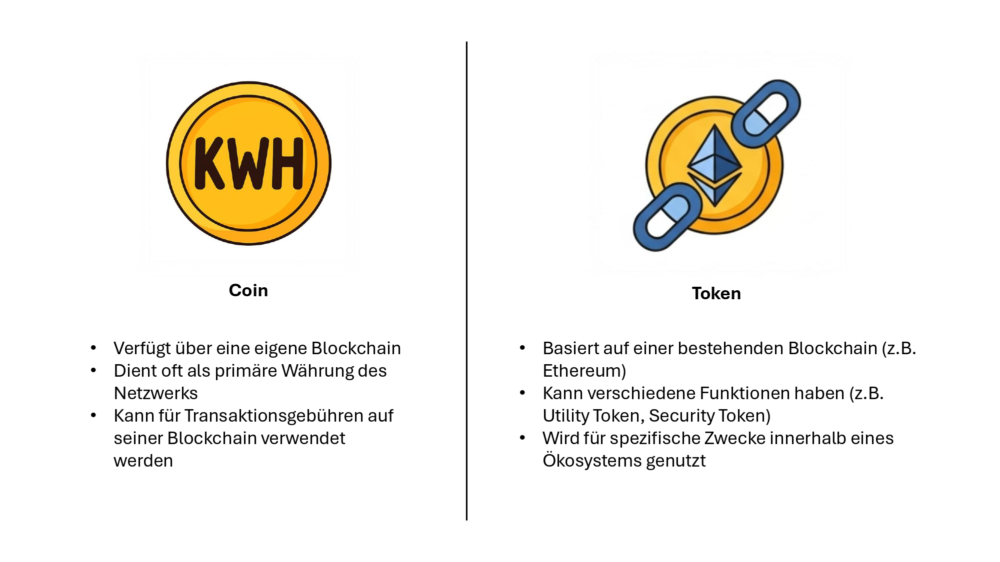

KWH-Coin: Revolutioniert den Energiemarkt.
Entdecken Sie eine dezentralisierte Zukunft für Energiehandel und -management, basierend auf Transparenz und Effizienz.
Einleitung: Die Herausforderung der Energiewende
Die globale Energiewende steht vor zentralen Herausforderungen, insbesondere im Umgang mit volatiler Erzeugung und Energieüberschüssen. Der KWH-Coin bietet hierfür eine innovative Lösung.
Das KWH-Coin Ökosystem
Anforderungen des Projekts
Analyse und Design des KWH-Coin Projekts
Dieser Abschnitt beleuchtet die grundlegenden Konzepte der Blockchain-Technologie, vergleicht sie mit bestehenden Kryptowährungen und erläutert die strategischen Designentscheidungen, die zur Entwicklung des KWH-Coins führten.
Blockchain: Das Grundkonzept
- Dezentrale, digitale Speicherart für Transaktionen in einer Kette von Blöcken.
- Keine zentrale Kontrollinstanz; jeder Teilnehmer hat eine Kopie des Ledgers.
- Blöcke sind kryptographisch durch Hashes verbunden, was Unveränderlichkeit sichert.
- Konsensmechanismen (z.B. Proof of Work) sichern Gültigkeit und Reihenfolge der Blöcke.
- Neue Transaktionen werden im Netzwerk verbreitet, validiert und in Blöcken gesammelt.
- Bietet Dezentralisierung, Transparenz, Unveränderlichkeit und hohe Sicherheit.
Umsetzungsoptionen für den KWH-Coin
Token
- Zunächst als einfachster und schnellster Weg betrachtet (Erstellung über Smart Contract auf bestehender Blockchain wie Ethereum).
- Zahlreiche Vorlagen und Tools vereinfachen den Prozess.
- Nachteil: Inhärente Abhängigkeit von der Host-Blockchain.
- Kein Einfluss auf grundlegende Parameter der zugrundeliegenden Kette (z.B. Mining-Schwierigkeit).
- Ungeeignet, da Anpassbarkeit der Mining-Schwierigkeit eine zentrale Anforderung war.
Fork
- Kopieren des Quellcodes einer bestehenden Blockchain und Anpassen spezifischer Parameter/Regeln.
- Beispiele: Litecoin, Dogecoin (Forks von Bitcoin).
- Vermeidet Nachteile der Token-Abhängigkeit.
- Nachteil: Komplexität der Anpassung überstieg Projektumfang.
- Einarbeitung in Jahre gewachsene Codebasis erforderte tiefes Verständnis und war zu zeitaufwändig/ressourcenintensiv.
Eigene Blockchain
- Obwohl immense Eigenleistung erforderlich, bot diese Option uns die notwendige Kontrolle und Flexibilität, um die Kernanforderungen unseres Prototyps gezielt und transparent umzusetzen.
- Orientierung am abstrakten Konzept der Blockchain-Architektur (ohne bestehende Codebasen).
- Umfasste Implementierung aller Kernkomponenten (Kryptographie, Netzwerkprotokoll, Konsensmechanismus).
- Ziel: Implementierung eines Prototyps, der Mining-Schwierigkeit anpassen kann und wichtigste Funktionen demonstriert.
- Bewusstsein, dass Funktionsumfang/Robustheit etablierter Lösungen nicht erreicht werden kann.
Dynamische Schwierigkeitsanpassung
- Ziel: Verhindern von Mining in Zeiten von hoher Stromnachfrage.
- Dynamische Anpassung der Mining-Schwierigkeit basierend auf dem durchschnittlichen Strompreis der letzten Stunde (SMARD.de-API).
- Konzept der Schwierigkeitsanpassung (4 Fälle):
- Bei Strompreis von 12,6 ct (EEG-Umlage): Schwierigkeit entspricht 1 KWh Energieaufwand.
- Strommangel (Preis über Initialwert): Berechnung wird proportional schwerer (z.B. doppelter Preis = doppelter Aufwand).
- Preis zwischen 0 ct und 12,6 ct: Berechnung wird leicht korreliert und bis zu 20% vereinfacht (moderater Überschuss).
- Negativer Strompreis (Optimalfall, Stromüberschuss): Energie wird in Coin umgewandelt; Schwierigkeit nicht vereinfacht (1 KWh Aufwand), da keine Einspeisevergütung für Betreiber.
Implementierung des KWH-Coin Projekts
Test des KWH-Coin Projekts
Dieser Abschnitt definiert die Teststrategien und -methoden, die angewendet wurden, um die Funktionalität und Zuverlässigkeit des KWH-Coins zu gewährleisten.
Unsere Roadmap
Die Roadmap von KWH-Coin skizziert unsere aufgewandte Zeit und Skizzierungen für die kommenden Phasen.
Anforderungen
Formulierung der Anforderungen passend zu einem Energie-Coin
Analyse und Design
Konzeptentwicklung, initiale Wettbewerbsanalyse, Entscheidung für eigenen Coin, Wahl der primären Programmiersprache (Python), Planung der Kernkomponenten (Blockchain, Coin, Wallet, Webseite).
Implementierung
Entwicklung des Projekts in Python, Definition des Proof-of-Work Mechanismus, Integration in die Blockchain, Kopplung des Strompreises mithilfe einer API, Entwicklung einer benutzerfreundlichen Wallet-Anwendung, Aufbau der informativen Webseite für Projektinformationen, spätere Erweiterung zur Handelsplattform
Testphase
Umfassendes Testing der Blockchain und der Addressen mit Hilfe von pytest
Demonstration
Vorstellung des Projektes an der OTH-Regensburg
Ausblick
Partnerverträge mit Energieversorgern, wie z.B Eon. Handelsplattform, wo Nutzer ihre KWH-Coins kaufen, verkaufen und bei Energieversorgern eintauschen können. Sicheres Anmelden. Peer-to-Peer Implementierung.
Unser Team
Das KWH-Coin Projekt wurde von einem engagierten Team erstellt. Hier stellen wir Ihnen die Autoren des Whitepapers vor.
Tobias Pöhnl
Co-Founder
David Trieu
Co-Founder
Fu-Khai Jonny Trieu
Co-Founder
Florian Lankes
Co-Founder
Häufig gestellte Fragen (FAQ)
Hier finden Sie Antworten auf einige der häufigsten Fragen zu KWH-Coin. Wenn Ihre Frage hier nicht beantwortet wird, zögern Sie bitte nicht, uns zu kontaktieren. Klicken Sie auf eine Frage, um die Antwort anzuzeigen.